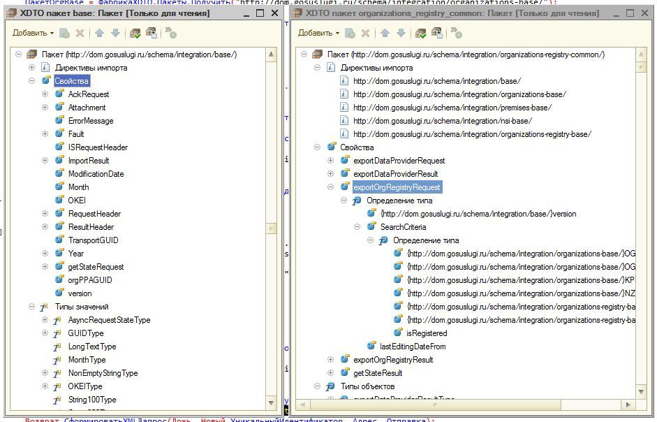

Есть очень много статей о том, как работать с XSL/XSD из 1С, но все они в стиле: возьмем нашу XSD схему (простую и удбоную) или наш web-сервис и смотрите, как все легко экспортировать или импортировать. А что делать, если нам дали пачку XSD-схем со сложным взаимосвязями и изменять мы них не можем, а работать и поддерживать актуальность схем надо?
Сразу скажу, вопросы шифрования/подписи по ГОСТУ при работе с ГИС ЖКХ за рамками этой статьи и на хабре уже освещались. Хотя без подписей запросы выполнить не удастся.

Начнем с простого — скачаем пакет форматов по интеграционному взаимодействию с ГИС ЖКХ, импортируем все xsd схемы из пакета интеграций, наведем порядок переименуем все как нам удобно. В итоге получим как показано на картинке:
Ну а теперь приступим к магии. Попробуем запросить данные из справочника организаций по ОРГН. Это подсистема organizations-registry-common метод exportOrgRegist.
В hcs-organizations-registry-common-service.wsdl указано:
Спецификация из hcs-organizations-registry-common-service.wsdl
Надо собрать SOAP пакет из заголовка ISRequestHeader, тела exportOrgRegistryRequest. Посмотрим их в xsd схемах спецификаций по интеграций.
hcs-base.xsd
hcs-organizations-base.xsd
hcs-organizations-registry-common-types.xsd
Ну приступим, откроем нужные нам пакеты XDTO. Оказывается, нужные сущности являются не типами, а свойствами, как с этим работать в документации на XDTO в статьях, которые я находил, не описано, поэтому воспользуемся урокам магии:
· Создадим объекты из свойств
· Создадим объекты из внутренних типов свойств или тип объектов
· Создадим объекты из Типов значений

Начнем с тела exportOrgRegistryRequest.
&НаСервереБезКонтекста
Функция ПолучитьДанныеОрганизацияПоОГРН(ОГРН)
//Получим нужные пакеты
ПакетOrgRegCom = ФабрикаXDTO.Пакеты.Получить("http://dom.gosuslugi.ru/schema/integration/organizations-registry-common/");
ПакетOrgBase = ФабрикаXDTO.Пакеты.Получить("http://dom.gosuslugi.ru/schema/integration/organizations-base/");
//Магия:выйдем на нужный тип через свойство, этот метод нам очень часто пригодится:
СвойствоXDTO = ПакетOrgRegCom.КорневыеСвойства.Получить("exportOrgRegistryRequest");
//Создадим сам объект для тела запроса
ОбъектXDTO = ФабрикаXDTO.Создать(СвойствоXDTO.Тип);
//признак что это элемент надо подписать сертификатом
ОбъектXDTO.Id = "signed-data-container";
//требования стандарта, импорт XDTO не обрабатывает аттрибут fixed
ОбъектXDTO.version = "10.0.2.1";
//критерий поиска
//Магия:опять выйдем на строенный тип, через свойства объекта
SearchCriteriaЗапись = ФабрикаXDTO.Создать(ОбъектXDTO.SearchCriteria.ВладеющееСвойство.Тип);
//огрн надо ставить через типизированное значение
OGRN = ФабрикаXDTO.Создать(ПакетOrgBase.КорневыеСвойства.Получить("OGRN").Тип, Строка(ОГРН));
SearchCriteriaЗапись.OGRN = OGRN;
ОбъектXDTO.SearchCriteria.Добавить(SearchCriteriaЗапись);
//сохраним тело
Запрос = Новый Структура("ОбъектXDTO,СвойствоXDTO,Имя", ОбъектXDTO, СвойствоXDTO);
//сохраним тип ответа, нам по надобиться для десериализаций ответа
ОтветСвойствоXDTOResult = ПакетOrgRegCom.КорневыеСвойства.Получить("exportOrgRegistryResult");
Возврат СформироватьXMLЗапрос(Новый УникальныйИдентификатор, Запрос, ОтветСвойствоXDTOResult );
КонецФункции
Напишем функцию для сбора XML-запроса:
&НаСервереБезКонтекста
Функция СформироватьXMLЗапрос(GuidЗаголовка, ОтправкаXDTO, ОтветXDTO)
ПакетBase = ФабрикаXDTO.Пакеты.Получить("http://dom.gosuslugi.ru/schema/integration/base/");
ПространствоИменSOAP = "http://schemas.xmlsoap.org/soap/envelope/";
//XML файл
ЗаписьXML = Новый ЗаписьXML;
ПараметрыЗаписиXML = Новый ПараметрыЗаписиXML("UTF-8");
ЗаписьXML.УстановитьСтроку(ПараметрыЗаписиXML);
ЗаписьXML.ЗаписатьОбъявлениеXML();
ЗаписьXML.ЗаписатьНачалоЭлемента("Envelope", ПространствоИменSOAP);
ЗаписьXML.ЗаписатьСоответствиеПространстваИмен("soap", ПространствоИменSOAP);
ЗаписьXML.ЗаписатьСоответствиеПространстваИмен("xsi", "http://www.w3.org/2001/XMLSchema-instance");
ЗаписьXML.ЗаписатьСоответствиеПространстваИмен("xs", "http://www.w3.org/2001/XMLSchema");
ЗаписьXML.ЗаписатьСоответствиеПространстваИмен("base", "http://dom.gosuslugi.ru/schema/integration/base/");
ЗаписьXML.ЗаписатьСоответствиеПространстваИмен("organizations-registry-base", "http://dom.gosuslugi.ru/schema/integration/organizations-registry-base/");
ЗаписьXML.ЗаписатьСоответствиеПространстваИмен("ns", "http://www.w3.org/2000/09/xmldsig#");
ЗаписьXML.ЗаписатьСоответствиеПространстваИмен("ro", "http://dom.gosuslugi.ru/schema/integration/organizations-registry-common/");
//Заголовок ISRequestHeader
ЗаписьXML.ЗаписатьНачалоЭлемента("Header", ПространствоИменSOAP);
//снова метод через свойства
ЗаголовокСвойствоXDTO = ПакетBase.КорневыеСвойства.Получить("ISRequestHeader");
ЗаголовокЗапроса = ФабрикаXDTO.Создать(ЗаголовокСвойствоXDTO.Тип);
ЗаголовокЗапроса.Date = ТекущаяДата();
ЗаголовокЗапроса.MessageGUID = ФабрикаXDTO.Создать(ФабрикаXDTO.Тип("http://dom.gosuslugi.ru/schema/integration/base/", "GUIDType"), Строка(GuidЗаголовка));
ФабрикаXDTO.ЗаписатьXML(ЗаписьXML, ЗаголовокЗапроса, ЗаголовокСвойствоXDTO.ЛокальноеИмя);
ЗаписьXML.ЗаписатьКонецЭлемента();
//Тело у нас будет подготовленый exportOrgRegistryRequest
ЗаписьXML.ЗаписатьНачалоЭлемента("Body", ПространствоИменSOAP);
ФабрикаXDTO.ЗаписатьXML(ЗаписьXML, ОтправкаXDTO.ОбъектXDTO, ОтправкаXDTO.СвойствоXDTO.ЛокальноеИмя, ОтправкаXDTO.СвойствоXDTO.URIПространстваИмен);
ЗаписьXML.ЗаписатьКонецЭлемента();
ЗаписьXML.ЗаписатьКонецЭлемента();
//отдаем результат для отправки
XMLЗапрос = Новый Структура();
XMLЗапрос.Вставить("XMLTекст", ЗаписьXML.Закрыть());
XMLЗапрос.Вставить("ОтветXDTO", ОтветXDTO);
Возврат XMLЗапрос;
КонецФункции
В итоге получим запрос:
XML запрос exportOrgRegistryRequest
Отправим запрос:
&НаСервере
Процедура ТестоваяОтправкаНаСервере()
//Узнаем данные по Сбербанку
XMLЗапрос = ПолучитьДанныеОрганизацияПоОГРН("1027700132195");
//Это тема для другой статья
//тут мы подписываем пакет данных
//и отправляем Post запрос на сервис
XMLОтвет = ОтправкаXMLЗапроса(XMLЗапрос);
Если XMLОтвет.КодОтвета < 299 Тогда
//запрос успешен
ОбъектXDTO = ДесериализацияОтвета(XMLОтвет.ИмяФайлРезультата, XMLЗапрос.ОтветXDTO)
КонецЕсли;
КонецПроцедуры
Ответ от серверов ГИС ЖКХ (СИТ-1):
XML ответ exportOrgRegistryResult
Как мы видим, ответ напрямую десериализовать не получится, потому что нет такого типа в предложенных xsd схемах. Нам надо как-то пропустить часть тэгов и обработать только область ответа. На эту тему я тоже не нашел информации, но методом проб и ошибок приходим к кусочку магий:
&НаСервереБезКонтекста
Функция ДесериализацияОтвета(ПутьКФайлу, ОтветXDTO)
//Откроем файл
Чтение = новый ЧтениеXML;
Чтение.ОткрытьФайл(ПутьКФайлу, , , "UTF-8");
//Начинаем пропускать все служебное заголовки, тело ищем наш тэг ответа
Пока Чтение.Прочитать() Цикл
Если Чтение.ЛокальноеИмя = ОтветXDTO.СвойствоXDTO.Имя Тогда
//т.к. вы спозиционировались на нужном место можно десериализовать данные. Магия
ОбъектXDTO = ФабрикаXDTO.ПрочитатьXML(Чтение, ОтветXDTO.СвойствоXDTO.Тип);
КонецЕсли;
КонецЦикла;
Возврат ОбъектXDTO;
КонецФункции
В итоге работать можно с очень сложными xsd схемами через стандартные инструменты платформы. В целом 1С контролируют типизацию и заполнения, бывает чересчур излишне, особенно когда внутри свойства пакета используется базовый тип другого пакета, но в любом случае тип нужно привести к локальному из-за другого пространства URI. Удобно работать с десериализоваными данными, так как там всю работу на себя берет платформа. Но проверки происходят на этапе выполнения, а при написания кода платформа 1С не предоставляет никаких подсказок и проходится пользоваться сторонними утилитами, и даже при выполнении большая часть элементов находится в состоянии «Неопределено» и даже тип или его свойство можно увидеть только в спецификации.